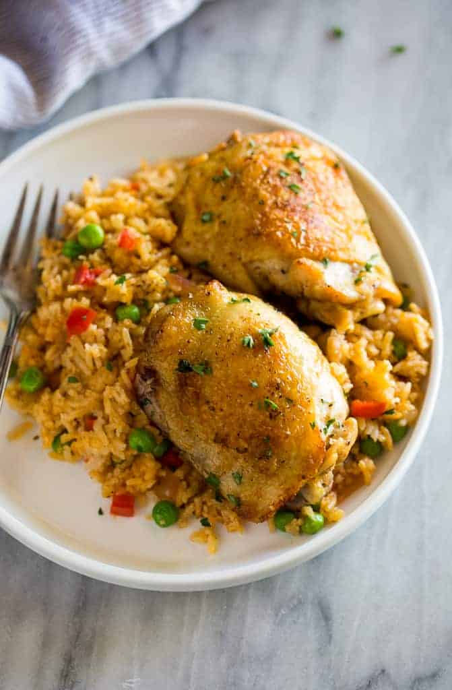
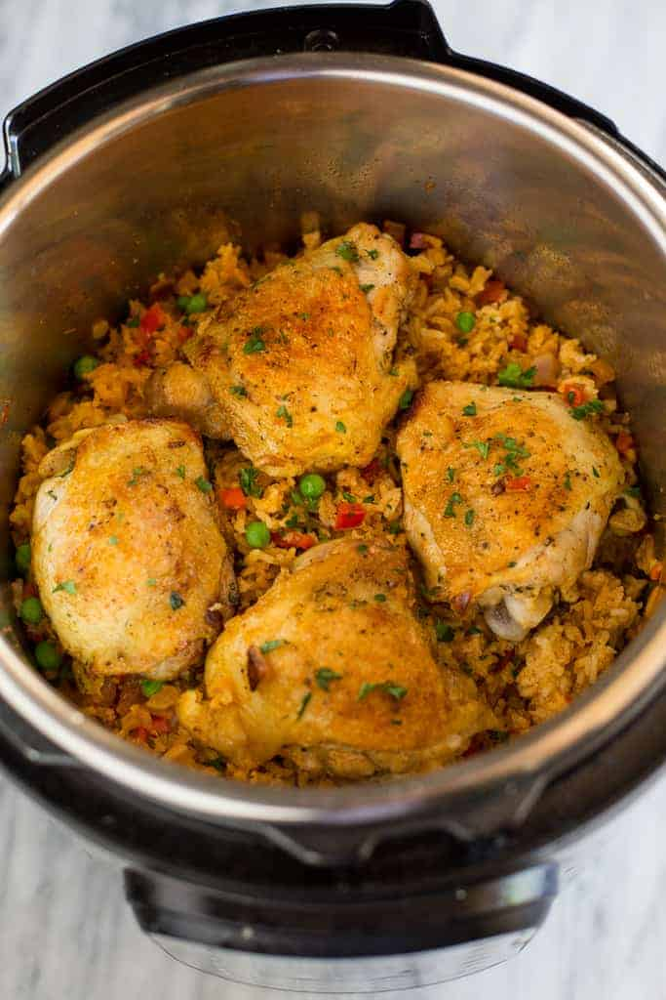

Instant Pot Chicken and Rice

Ingredients
- 1/4 cup olive oil
- 4-5 bone-in chicken thighs
- salt and pepper
- 1 onion, chopped
- 1 bell pepper, chopped
- 6 cloves garlic
- 1 teaspoon oregano
- 1 teaspon paprika
- 1 teaspon ground cumin
- 1/2 teaspoon salt
- 1/2 teaspoon pepper
- 1 tablespoon tomato paste
- 1/2 cup white wine, optional
- 2 cups long grain white rice
- 2 bay leaves
- 2 1/2 cups low sodium chicken broth
- 1 cup frozen peas
Directions
- Prepare all of your ingredients and have them ready. This will help prevent too much liquid from evaporating during the sauteing and help you avoid a burn.
- Turn Instant Pot on saute setting. Add oil. Season chicken with salt and pepper.
- Add chicken to the hot pot and cook for a few minutes on both sides, until the skin on the chicken thighs is golden brown and crispy. Remove chicken to a plate.
- Add onion, bell pepper, garlic, oregano, paprika, cumin, salt, pepper and tomato paste to the pot. Stir well and saute for 2 minutes. Remove everything to a plate.
- Add white wine to the pot to deglaze the pain, scraping the browned bits from the bottom of the pan. Cook for about 1 minute until most of the wine has evaporated. Turn the pot OFF!
- Add chicken broth and bay leaf to the pot and stir. Add the veggie/spice mixture and stir to combine. Pour rice over everything and place chicken thighs on top, skin side up.
- Secure instant pot lid, with the valce turned tot he sealed position. Cook on manual, high pressure, for 15 minutes. When the timer beeps allow the pressure to naturally release for 15 minutes before removing the lid.
- Remove the instant pot lid and pour the frozen peas on top of the mixture. Return lid and allow to rest for a few minutes.
- Remove the chicken to a plate. Gently fluff rice with a fork.
- Garnish if wanted
Thoughts
I typically make this with broccoli instead of peas which is just personal preference but I think peas are probably better suited for the meal. I typically also do not use white wine as I never have any. This is actually the first meal where I learned that rice doesnt have to be bland and boring! How exciting.
Back Home
